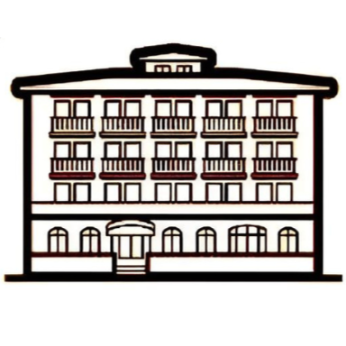

Brasserie de Paudex - Restaurant 100% Fait Maison près de Lausanne
La Brasserie de Paudex, ce restaurant qui fait parler dans tout l'est lausannois — et pour cause ! À deux pas de Lausanne, sur la route du Lavaux, on y déguste des malakoffs si croustillants-coulants qu'ils créent une dépendance, un bœuf bourguignon du vendredi qui risque sérieusement de vous faire oublier tous vos problèmes de la semaine, et le burger maison élu (officieusement) meilleur du Vaud. Une cuisine 100% fait maison, généreuse et réconfortante, avec des produits locaux et de saison. Bienvenue à table !

10h00 - 14h30 / 17h00 - 22h30
10h00 - 14h30 / 17h00 - 22h00
17h00 - 22h30
Dimanche : Fermé
On garde votre table au chaud 15 min maximum.
Chef Fabrice Hochart - De Palézieux à Paudex
Derrière chaque assiette de la Brasserie de Paudex, il y a un homme, une philosophie, et 20 ans de passion culinaire.
Quand Fabrice Hochart a quitté l'Auberge de l'Union après 5 ans de bons et loyaux services, une question revenait : "Mais où va-t-il aiguiser ses couteaux maintenant ?" La réponse ? À la Brasserie de Paudex, cette adresse emblématique nichée entre Lutry et Pully, sur la route du Lavaux.
Ce libre-penseur culinaire cuisine comme il respire : selon ses goûts, ses envies, et cette philosophie bien à lui qui refuse les demi-mesures. "Il n'y a pas de bas et de hauts morceaux : tout est bon quand c'est bien préparé !" C'est son mantra. Et ça se vérifie dans chaque assiette qui sort de sa cuisine.
Passionné par les producteurs locaux qu'il connaît par leur prénom — parce que chez Fabrice, on ne commande pas des ingrédients, on construit des relations — il transforme les meilleurs produits du terroir vaudois en moments de partage généreux. Entre tradition suisse et créativité culinaire, entre rigueur technique et convivialité débridée, c'est cette joie simple de bien manger ensemble qu'il apporte aujourd'hui à Paudex.


NOS VALEURS
Une cuisine de brasserie franche, généreuse et un peu canaille, ancrée dans le terroir vaudois. Du fait maison, des produits locaux, et les vins du Lavaux — simple, direct, efficace.
Notre Restaurant
Ici, on est dans une brasserie comme on les aime : conviviale, décontractée, où tout le monde se sent chez soi. Familles, couples, bandes de potes — on accueille tout le monde avec le sourire. Aux beaux jours, la terrasse devient le quartier général pour déjeuner au soleil avec un verre bien frais. Et pour ceux qui aiment les ambiances un peu particulières, on a une cave souterraine aménagée en salle — atmosphère garantie ! Que vous soyez en haut avec vue sur les vignobles ou en bas dans notre cave, le programme reste le même : bien manger, bien boire, et passer un bon moment.
Nos Vins & Producteurs de la Région
À la Brasserie de Paudex, on travaille en direct avec les vignerons et producteurs de la région. Des artisans passionnés qui partagent notre vision : du goût, de la qualité, et cette fierté de défendre ce qui se fait de mieux autour de nous. Des maraîchers aux éleveurs, en passant par les fromagers et les vignerons du Lavaux, chacun apporte son savoir-faire pour que vos assiettes racontent l'histoire du terroir vaudois. Transparence et qualité sont nos maîtres-mots.
Vignerons de Lavaux
- Domaine Croix Duplex — Epesses
- Cave Luc Massy — Villette
- Domaine Antoine Bovard — Cully
- Cave des Viticulteurs de Bonvillars — Bonvillars
- Domaine Louis Bovard — Lutry
Producteurs Locaux
Viandes & Charcuterie
- Boucherie Mövenpick — Lausanne
- Salaisons d'Yvorne — Yvorne
Légumes & Maraîchage
- Jardin des Monts — Palézieux
- Maraîchage du Jorat — Jorat
Boulangerie
- Amandine Boulangerie — Pain artisanal
Fromages
- Fromagerie de Gruyères — Gruyères
- Laiterie de Moudon — Moudon
Poissons
- Pêcheurs du lac Léman
Ce que nos clients disent
Parce que les meilleures recommandations viennent de ceux qui ont partagé nos tables.
"Très bonne adresse ! J'ai pris un tartare en entrée, frais et bien assaisonné (enfin un tartare piquant !), puis une entrecôte tendre et parfaitement cuite. Les produits sont de qualité et ça se sent dans l'assiette. Déjà séduit par la cuisine du chef Hochart je suis heureux de le voir s'installer dans un cadre aussi agréable avec des serveurs très gentils tout au long du repas. Je recommande sans hésiter. À bientôt !"
"Réouverture de l'établissement. Très bonne cuisine, style brasserie. Une soupe à l'oignon à tomber qui rappelle une jeunesse. Très bonne ambiance conviviale et fine cuisine."
"Juste magnifique et le patron ! Une vraie pièce de théâtre à lui seul. Bravo on reviendra 🍻🌟🍻"
Nous Trouver
Brasserie de Paudex
Route du Simplon 7, 1094 Paudex
En voiture — Depuis Lausanne 8 min · Vevey 15 min · Parking disponible
Transports publics — Bus ligne 9 depuis Lausanne, arrêt "Paudex" devant le restaurant
À vélo — Itinéraire vélo région lausannoise · Parking vélos disponible